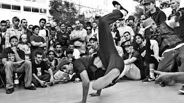

Hip hop music (bazen hip-hop, rap müzik, hip-hop müzik şekillerinde de anılır), rap eşliğinde ritmik bir müzik ve kafiyeli ifadelerle oluşturulan bir müzik tarzı. Hip hop kültürünün bir parçasıdır.
1970'lerin başında New York'un siyah gettolarında doğan hip hop kültürünün müziğidir. Rap "Rhytm And Poem" ("Ritim ve Şiir" ya da "Ritmik Şiir") veya "Rhytmic African Poetry" (Ritmik Afrika Şiiri) sözcüklerinin kısaltması olarak bilinse de aslında Rap, İngilizcede "ağır eleştiri" demektir ve "and" kelimesi kısaltmalarda asla "a" harfiyle sembolize edilmez (&,n,N) [Rock n Roll, R&B, P&G]. Rap, müziğin tempo ve ritmine uyarlanıp beat eşliğinde söylendiği sokak tarzı ve sert sözlerin ağır bastığı hip hop kültürünün içindeki başlıca dört elementten biridir.
"Sokak dansı" olarak da bilinen, hip hop kültürüne ait dans türü. Kız break dansçılara b-girl, erkeklere b-boy denir.
Sprey boyalarla duvarlara, trenlere ve özellikle sokaklara çizilen resim ve yazılardır. Türkiye'de İstanbul/Kadıköy'de sık olarak görülen bu tarz son zamanlarda İzmir'in Karşıyaka ve Ankara'nın Yenimahalle ilçelerinde yer almaktadır.
